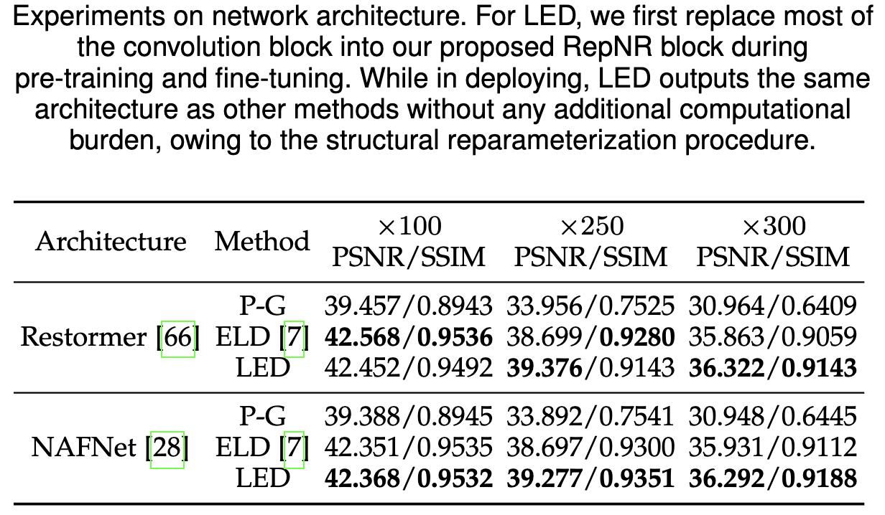
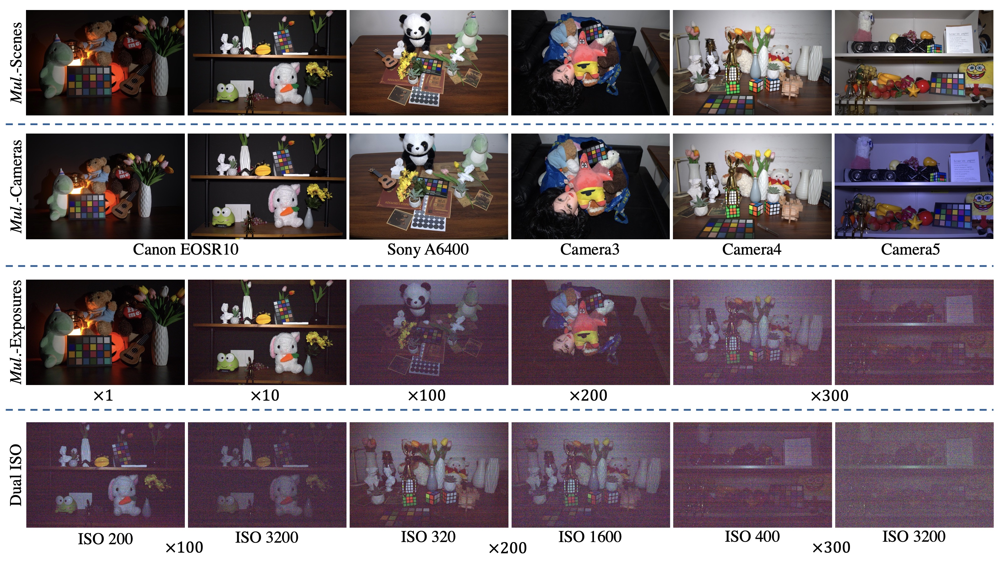
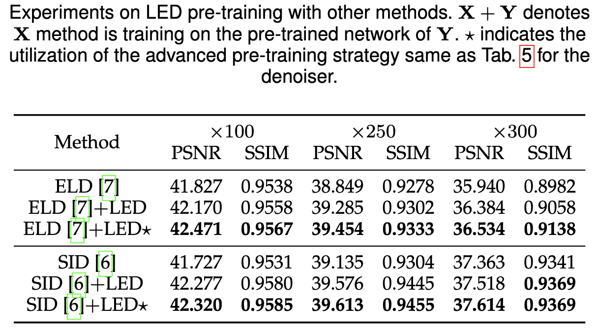

Make Explict Calibration Implicit:
Make Explict Calibration Implicit:
"Calibrate" Denoiser Instead of The Noise Model
VCIP, CS, Nankai University
Arxiv 2023
This is an extension of our LED, ICCV 2023.
🔥 Effectiveness Across Various Network Architectures! 🔥
2 pairs for each ratio + 1.5k iterations = SOTA Performance!
By simply replacing the convolutional operators of other
structures with our proposed RepNR Block, LED can be easily
migrated to architectures beyond UNet. In Tab. 8, we experimented
with Restormer and NAFNet, transformer-based and convolution-
based, respectively. Results demonstrating that LED still possesses
performance comparable to calibration-based methods.
Moreover, relative to the training time of ELD (32h22min / 11h42min),
LED (10min26s / 12min6s) requires only 0.5%/1.7% of it.
Experiments on More Architectures

📸 A Brand-New Dataset Spanning Multiple Camera Models!
To further validate the effectiveness of LED across different
cameras, we introduce the DarkRAW dataset. Compared to
existing datasets, our DarkRAW dataset has the following
advantages:
More Details
-
Multi-Camera Data: To further demonstrate the
effectiveness of LED across different cameras (
corresponding to different noise parameters, coordinates
C), our dataset includes five distinct models that are
not covered in existing datasets. Additionally, DarkRAW
includes not only full-frame cameras but also
APS-C format cameras with smaller sensor areas,
which often exhibit stronger noise characteristics.
-
Varied Illumination Settings: The dataset contains
data under five different illumination ratios ($\times$1,
$\times$10, $\times$100, $\times$200 and $\times$300), each representing vary-
ing levels of denoising difficulty.
-
Dual ISO Configurations: For each scene and each
illumination setting, there are two different ISO settings.
These can be used not only for the finetuning
stage of the LED method but also for testing the
robustness of the algorithm under different illumination settings.

🎑 More Visual Result 🌅
Abstract

Explicit calibration-based methods have dominated RAW image denoising under extremely low-light environments.
However, these approaches are impeded by several critical limitations: a) the calibration process is labor-intensive and time-intensive,
b) there is a challenge in transferring denoisers across different camera models, and c) the disparity between synthetic and real noise
is exacerbated by elevated digital gain. To address these issues, we introduce a groundbreaking pipeline named Lighting Every
Darkness (LED), which is effective regardless of the digital gain or the type of camera sensor used. LED eliminates the need for explicit
noise model calibration, instead utilizing an implicit fine-tuning process that allows quick deployment and requires minimal data. Our
proposed method also includes structural modifications to effectively reduce the discrepancy between synthetic and real noise, without
extra computational demands. It surpasses existing methods in various camera models, including new ones not in public datasets, with
just two pairs per digital gain and only 0.5% of the typical iterations. Furthermore, LED also allows researchers to focus more on deep
learning advancements while still utilizing sensor engineering benefits
Method

Overview of our LED.
Unlike typical calibration-based algorithms, our method, as shown in the figure, consists of four steps in total:
1. Synthetic Noise Generation.
2. Pre-training the denoiser.
3. Collecting few-shot paired data using the target camera.
4. Fine-tuning the denoiser using the data collected in Step 3.
Compared to calibration-based algorithms, LED uses randomly sampled virtual camera parameters during synthetic noise generation, thereby avoiding the calibration process.
During each iteration of pre-training, a random virtual camera is first selected, and the training is performed using the paired data synthesized with that virtual camera. When the k-th virtual camera is selected, only the k-th CSA (Camera-Specific Alignment) is trained. This approach aims to decouple camera-specific information from noise information.
During Finetuning, the first step is to average all CSAs to enhance generalization capability. After that, an additional branch is added to handle out-of-model noise. It's important to note that the blue 3x3 convolution is frozen during this process.
Note: The network architecture of LED is exactly the same as other methods during deployment! This is possible thanks to the reparameterization technique. Below are the details regarding these aspects.
More detail can be found in our main paper.
Details when deploy
LED's another highlight lies in its final deployment, where the neural network remains completely consistent with other methods! No additional computational overhead is added, thanks to the following reparameterization process.

LED Pre-training Could Boost Existing Methods!
Experiments on Pre-Traning

LED pre-training could boost the performance of other
methods. By integrating LED pre-training into various existing
calibration-based or paired data-based methods, ELD and SID,
our approach facilitates notable enhancements in performance.
These improvements are not uniform
but rather depend on the difference of the pre-training
strategies employed. This proves particularly effective in the
industrial applications, where the demands for efficiency are
paramount. The strategic application of LED pre-training
not only boost the performance of the denoiser but also
paves the way for more advanced, adaptable, and efficient
denoising.
Discussion on "Why Two Pairs"?


The left figure shows the performance of LED as it varies with the number of few-shot data pairs. Notice that when using only one data pair for fine-tuning, LED's performance is not as high as ELD. However, with two data pairs, LED's performance significantly surpasses that of ELD.
Indeed, this is because the camera's gain and noise variance have a linear relationship, as illustrated in the right graph. With just two pairs of images, LED can effectively learn this linear relationship, as two points are enough to determine a straight line.
However, due to the presence of errors, the horizontal coordinates of these two points need to be sufficiently different. In other words, the two pairs of images used by LED should have a significant difference in their ISO settings at the time of capture (ISO < 500 and ISO > 5000).
More details (including validation experiments) can be found in our main paper.
BibTex
@inproceedings{jin2023lighting,
title={Make Explict Calibration Implicit: "Calibrate" Denoiser Instead of The Noise Model},
author={Jin, Xin and Xiao, Jia-Wen and Han, Ling-Hao and Guo, Chunle and Liu, Xialei and Li, Chongyi and Cheng Ming-Ming},
journal={Arxiv},
year={2023}
}
Contact
Feel free to contact us at xjin[AT]mail.nankai.edu.cn!